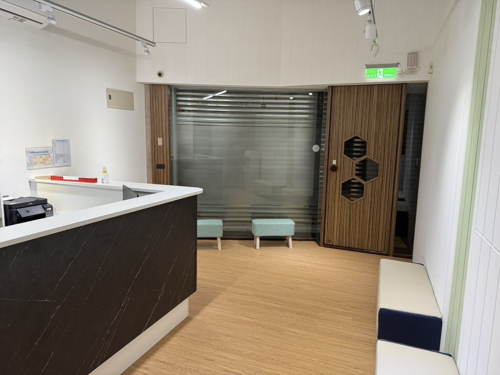
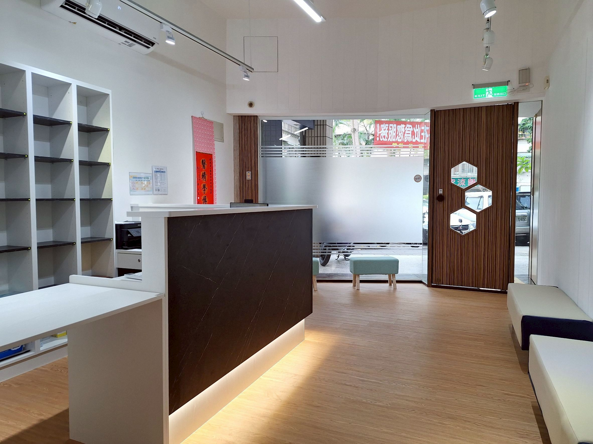
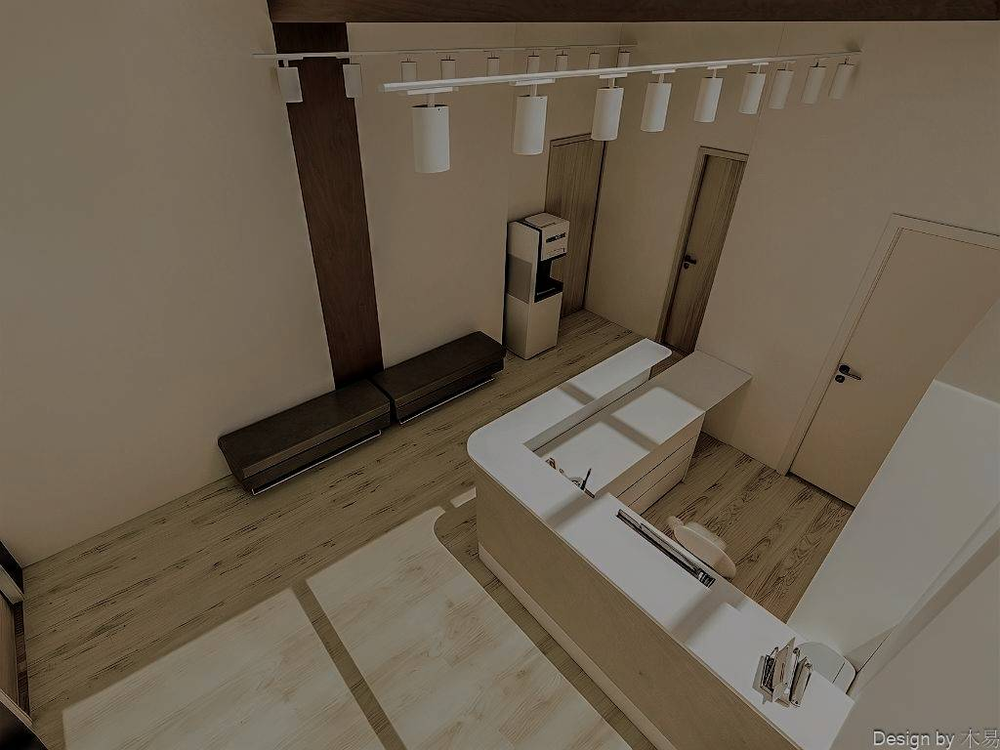
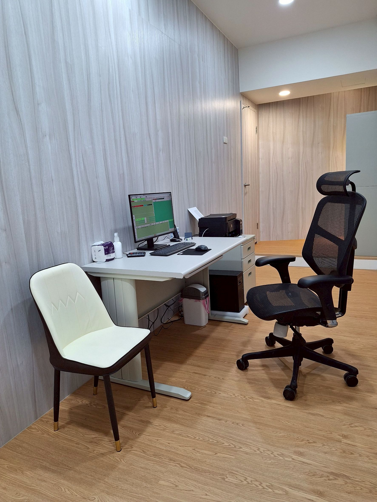
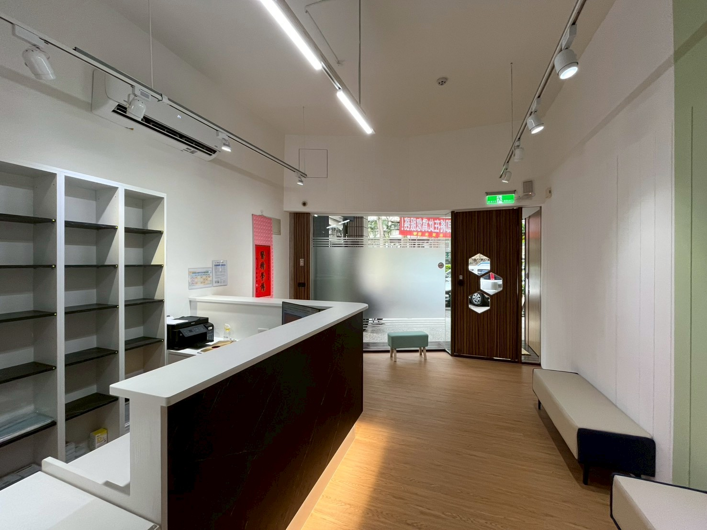

Chen-Jee Hong, M.D.
擁有超過30年的臨床經驗，前臺北榮總心身醫學科主任。專精於失眠、焦慮、憂鬱及精神藥物基因檢測，致力於透過「精準醫療」減少試藥痛苦，協助病患改善生活品質。
溫馨、隱密、專業，讓您卸下心防的療癒場域





以精準醫學與同理心，帶您破解睡眠與情緒的迷思，找回內心的平靜。
了解自己是療癒的第一步。我們設計了一系列兼具趣味與臨床參考價值的互動測驗，包含：依戀型態、高敏感族群、ADHD篩檢、大五人格等，帶您探索內在性格。
「醫師，原因太多了...」透過三個核心問題，協助您釐清壓力的可控性，找回生活主控感。
藥物像遮雨傘，心理治療則是修復房屋結構。帶您了解本診所心理治療的專業導向與預約方式。
睡眠問題往往是情緒的警報器。當大腦不斷「反芻思考」時，生理機制便無法真正休息。
這已經不是「想開一點」就能解決的事，這是大腦與情緒調節系統正在過載。帶您了解心理治療如何重新訓練大腦。
權威期刊《Nature》最新研究指出，許多精神疾病共用同一套風險基因。帶您看懂基因檢測對臨床的真正意義。
除了失智症，還有機會揪出猝死、遺傳性癌症與嚴重藥物過敏的隱藏地雷。帶您了解為何WES是終生受用的健康投資。
全新的新生兒基因篩檢項目-全外顯子/全基因定序，可將人體2萬多個基因一次分析完成，建立起寶寶健康精準基因資料庫。此資料庫可協助發現是否帶有遺傳性疾病，幫助寶寶早期發現疾病，早期預防，及早治療，並可得知寶寶之體質，對特定藥物反應等，可提前給予維持健康之方針與建議。
「我爸爸得了失智症，我以後也會得嗎？」超過90%患者沒有明顯家族病史。帶您破解遺傳迷思與基因檢測重要性。
為什麼不建議把門診的MMSE測驗拿回家考長輩？教您使用真正的居家黃金標準「AD8失智症篩檢量表」，只要兩分鐘就能知道是否需要就醫。
長輩退縮不理人，究竟是失智症、憂鬱症還是妄想症（3D）？精神科醫師教您三個關鍵提問，協助家屬提早察覺危機並正確就醫。
長輩突然變得多疑、暴躁或日夜顛倒，常讓家屬與看護瀕臨崩潰。這並非精神病發作，而是 BPSD。醫師教您不爭辯、不盲目加藥的實用照護對策。
有作夢就是沒睡著？手錶數據讓你越來越焦慮？白天「度估」才是晚上的睡眠殺手！帶您破除迷思，別再盲目加重安眠藥。
破解失眠迷思！您的失眠是正常老化、大腦過熱，還是生理時鐘大亂？跟著睡眠偵探一起找出真正的原因。
怕成癮？怕跌倒？洪醫師教您打破傳統死板教條，安全駕馭助眠藥物，並學會在狀況好轉時適時放下「暫時的拐杖」。
「使蒂諾斯10毫克數字那麼大，是不是代表下重藥？」其實毫克是重量不是強度！用「啤酒與高粱」的秒懂比喻，為您揭開精神科藥物的真實戰力。
真正能讓您從此好眠的根本治療是「失眠認知行為治療(CBT-I)」。透過大腦與行為的重新訓練，幫您找回睡眠主導權！
GABA、色胺酸真的能助眠？還是強大的安慰劑效應？精神科醫師帶您看懂雙盲試驗真相，教您把錢花在刀口上！
破解「不知足」的迷思！憂鬱症不一定是壓力造成的，而是大腦的情緒調節機制失調。看懂三大症狀，找回快樂的自己。
破解迷思！憂鬱與失眠不能只靠靜態休息。看運動如何分泌大腦肥料 BDNF，成為最天然的處方箋。
診所為什麼沒有測自律神經的儀器？精神科醫師真心話：比起短短5分鐘容易波動的數據，我們更重視深度問診。
為什麼會沒來由地心悸、胸悶、恐慌？帶您破除「壓力太大」的迷思，找出隱藏在自律神經失調現象背後真正的疾病根源。
發出訊息對方沒回，就暗暗發誓數到100？帶您看懂這種為了尋求安全感而產生的「鴿子效應」，是如何讓交感神經長期過度活躍，並教您三步重拾自由。
從頭痛、心悸到腸胃不適，自律神經失調的症狀繁多。透過這份互動式評估表，計算您的症狀負擔分數，並獲得專業的後續建議。
長年受失眠與焦慮所苦，或是躁鬱症偶爾發作但能正常上班，可以申請重大傷病或身障證明嗎？帶您看懂福利申請的「疾病名稱」與「功能退化」雙重標準。
怕吃藥有副作用？覺得靠意志力就好？醫學界最大規模的十萬人統合分析證實，抗憂鬱藥絕非安慰劑。帶您看懂21種藥物大PK，醫師如何為您量身挑藥。
思覺失調症絕非多重人格。帶您了解正性與負性症狀、好發於青壯年的關鍵時期，以及現代醫學如何幫助患者找回大腦健康。
憂鬱症或自律神經失調可以打長效針嗎？為什麼有些病患打了卻生不如死？帶您看懂長效針的真實成分，以及醫師在施打前絕對不能省略的保命評估。
吃藥變胖？整天昏睡？月經不來？引述醫學權威期刊《The Lancet》針對 32 種藥物的大型研究，帶家屬看懂醫師如何根據副作用與療效為患者「量身挑藥」。
明明已經發病亂跑、出現妄想，急診卻說「沒有傷人自傷之虞不能強制住院」？面對法規限制，教家屬如何透過錄影舉證、居家治療與溝通話術打破僵局。
| 身份別 | 掛號費 | 部分負擔 |
|---|---|---|
| 初診 (健保) | 600 | 50 |
| 複診 (健保) | 300 | 50 |
| 自費 初診 | 1200 | 0 |
| 自費 複診 | 800 | 0 |
| 榮民 | 250 | 0 |
| 福保 (低收入戶) | 200 | 0 |
| 身心障礙、重大傷病 | 150 | 50 |
給老朋友與新朋友的溫馨提醒
我們非常感謝您的信任與支持！但這點需要特別向您說明：
依據健保署規定，當您第一次來到新的醫療院所（本診所），系統會認定為「初診」。為了建立完整的初診評估與用藥檔案，首診無法立即開立「慢性病連續處方箋」。
這短暫的不便，是為了確保您的用藥符合健保安全規範，避免您或診所產生後續的申報問題。敬請見諒！
我們提供便捷的雲端線上掛號服務。
請點擊下方按鈕前往專屬頁面。
如果您是從榮總或其他醫院轉來的老病人，請注意本診所初診（第一次看診）無法開立連續處方箋。請您預留時間，需於一個月後回診一次，之後即可正常領取連處。
舒眠身心醫學診所
地址 臺北市北投區自強街141巷17號
手機瀏覽可直接點擊：
點此開啟官方連結 (Linktree)